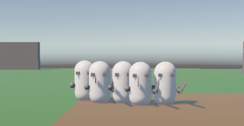
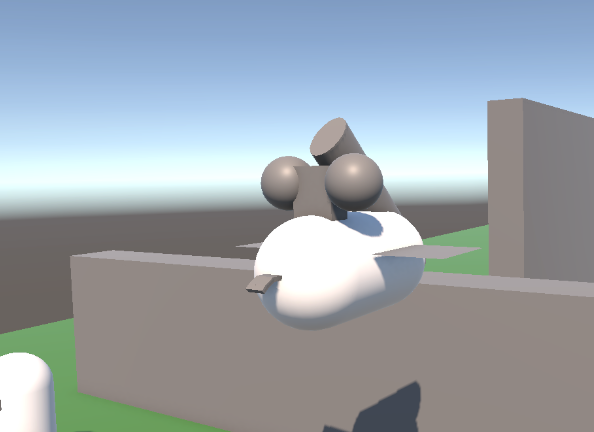
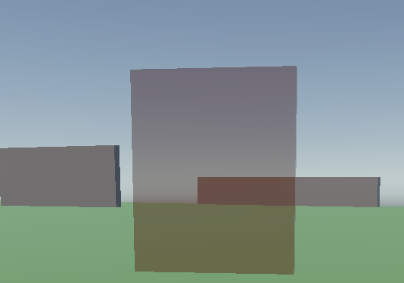
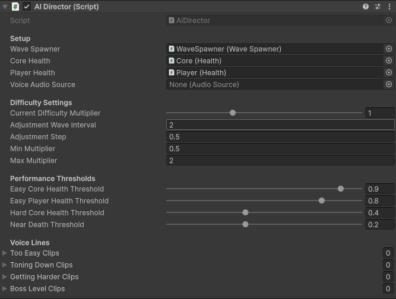
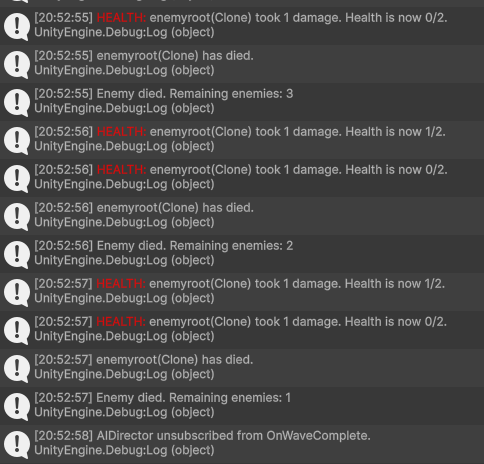

Orywal
BendsTD
The Project: An Active Tower Defense
BendsTD is a 3D, third-person tower defense game that subverts the genre's passive formula. Instead of just being a "sky-god" builder, the player is an active combatant on the field, fighting alongside their towers.
My goal was to create a feature-rich, systems-heavy prototype from scratch to prove my "hybrid" identity as a technical designer. This document and the video below are the proof of that work.
Developer Walkthrough (Creative Work Sample)
This 6-minute video is my primary creative sample for my USC application. It's a full developer-narrated walkthrough of the game's design, systems, and ideas.
My full 6-minute developer walkthrough, as submitted to USC
Abilities
My ability kit was designed to create deep, strategic gameplay.
Problem: Ground Swarms

This is a basic Soldier.
Solution: Mud Pit

The Mud Pit is a crowd-control tool that slows enemies, giving the player strategic time to defend.
Problem: Flying Units

The LobberAI flies over the Mud Pit, ignoring the trap and attacking the player from a distance.
Solution: Earthen Wall

The Earthen Wall is a high-skill, charge-based projectile. It's the only tool that can hit flying units, but it locks the player in place, creating a "risk vs. reward" choice.
A Peek Inside: The Systems
This project is driven by several complex, interconnected C# systems. Here is a look at the "magic" behind the scenes.

My AI Director script in the Inspector. All settings are exposed

A C# snippet from the BossAI.cs script, showing the leap attack logic

The live debug console, printing status updates as I playtest.
Future Vision & Next Steps
I am incredibly proud of this technical foundation, but I also recognize its gaps. My future vision for this project is to evolve it from a "prototype" into a true "player experience."
- Integrate a Narrative: I would add a compelling story that gives a reason to defend the core.
- Add a Roguelike System: After each wave, the player would get a choice of three random upgrades, making every playthrough a unique mix of skill and luck.
- Focus on "Game Feel": I would move beyond just "functional" and into "impactful", adding layered sound design, particle effects, and screen shake.
This is why I am applying to USC as I want to grow my skillset beyond a technical foundation and explore into really creating complete products that are exciting and fun.